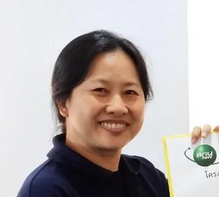

Nuclear Researcher Finder
ค้นหานักวิจัยนิวเคลียร์
เกศินี เหมวิเชียร
เกียรติพงษ์ คำดี
เขมรุจิ เข็มทอง
จักรกฤช แสงกรกฎ
จารุรัตน์ เอี่ยมศิริ
เฉลิมพงษ์ โพธิ์ลี้
ชัญภักต์ คูคู่สมุทร
ฐิติมา คงรัตน์อาภรณ์
ฐิติรัตน์ รัตนวงษ์วิบูลย์
ดุษฎี รัตนพระ
ทศพล แทนรินทร์
ธนกร ความหมั่น
ธีรนันท์ แตงทอง
ธีรพัชร์ ชุติมาสกุล
นิชธิมา เอื้อพูนผล
ปัญชลี ประคองศิลป์
ปิยนุช อ้อพงษ์
ปิยะนุช ทองเจิม
พชิรารัฐ โสลา
พัชฎา โนจิตต์
พัชรียา จันทร์เรือง
พิมพ์พร อุทยารัตน์
พิริญา แก้วพุกัม
เพ็ญนภา การะเวก
ภัทรา เลิศศราวุธ
มณฑล ยงค์ประวัติ
มยุรี ลิมติยะโยธิน
รัตนากรณ์ เชียงหนุ้น
ฤทธิรอน สำราญ
ละมัย ใหม่แก้ว
วชิราภรณ์ ผิวล่อง

วณิช ลิ่มโอภาสมณี
วรารัตน์ คำหวาน
วศิน เวชกามา
วาสนา บุญญวน
วิชัย ภูริปัญญวานิช
วิราณี ศรีเวียง
วิลาสินี กิ่งก้ำ
วีระวัฒน์ พรรุ่งเรืองโชค
วุฒิไกร กุลสวัสดิ์
ศริญญา วงษ์สนิท
ศรินรัตน์ วงษ์ลี
ศศิกานต์ นุชแดง
ศศิพันธุ์ คะวีรัตน์
ศักดิ์ชัย หลักสี
ศิริลักษณ์ ชูแก้ว
สุภลักษณ์ คงศรี
สุรศักดิ์ สัจจบุตร
- เกษตร (Agriculture): การทำหมันแมลงวันผลไม้ การพัฒนาพันธุ์ข้าว พริก ไม้ดอก
- โบราณคดี (Archaeology): มรดกทางวัฒนธรรม การวิเคราะห์อายุ การสืบค้นแหล่งที่มาโบราณวัตถุ
- ลำอนุภาค (Beam): การถ่ายภาพด้วยนิวตรอน การใช้ลำอนุภาคจากเครื่องไซโคลตรอน
- พลังงาน (Energy): การศึกษาตัวเร่งปฏิกิริยาไบโอดีเซล การประเมินผลกระทบจากอุบัติเหตุโรงไฟฟ้านิวเคลียร์
- สิ่งแวดล้อม (Environment): การวิเคราะห์น้ำฝน น้ำบาดาล ด้วยเทคนิคไอโซโทปเสถียร การวัดเรดอนในสิ่งแวดล้อม
- อาหาร (Food): การตรวจผลการฉายรังสีอาหารและสมุนไพร การวิเคราะห์การปนเปื้อนของเชื้อจุลินทรีย์ สารเจือปน และธาตุองค์ประกอบในอาหาร
- สุขภาพ (Health): การใช้ไอโซโทปรังสีวินิจฉัยโรค การพัฒนาผลิตภัณฑ์ทางการแพทย์ การพัฒนาเครื่องสำอางโดยกระบวนการทางรังสี
- วัสดุศาสตร์ (Materials): การพัฒนาโพลิเมอร์ด้วยรังสี การตรวจสอบพลาสติกชีวภาพ